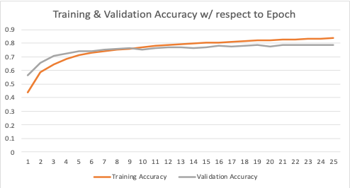
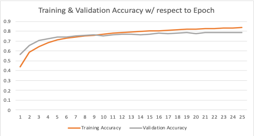

Realtime A.I. Object Detector
SKILLS & KNOWLEDGE
- TensorFlow Object Detection API
- Convolutional Neural Network
- Data Augmentation
- Python Coding
Convolutional Neural Network
The challenge is to develop a practical trained CNN model that can deliver high detection accuracy in recognition of electronic components. Below shows the concept of CNN.

Deshpande, A., 2016. A Beginner's Guide To Understanding Convolutional Neural Networks. [online] Engineering at Forward | UCLA CS ‘19. Available at: <https://adeshpande3.github.io/A-Beginner%27s-Guide-To-UnderstandingConvolutional-Neural-Networks/> [Accessed 20 June 2020].
single shot multibox method
The pre-trained model trained based on the Common Object in Context (COCO) dataset was used to reduce the total training time. The main training was conducted by TensorFlow framework using image data. The electronic components were classified in ten classes and more than 2,000 images were used as shown below.
Y. Li, W. Hu, H. Dong, and X. Zhang, “Building Damage Detection from PostEvent Aerial Imagery Using Single Shot Multibox Detector,” Applied Sciences, vol. 9, no. 6, p. 1128, 2019
Image Augmentation
Image augmentations are performed in the training for each image of the data set. This makes randomly some changes on the input images, such as rotating, resizing, distorting color, and adjusting brightness and contrast.
Detection Accuracy Results (100%)
Detection accuracy can be visualized by the webcam inference and be measured by a ratio of the number of objects correctly detected to the number of objects expected. Since it depends on the object size, 100% detection can be achieved by bringing the webcam closer to the circuit board.
Training Accuracy Results (83.5%)
Training accuracy can be visualized by the TensorFlow evaluation script with some sample images. The accuracy value can be calculated as the Intersection of Union (IoU), which is a ratio of an over-rapped area between the detected and expected bounding boxes to the area of union between them. In short, the more over-rapped area and less area of union, the higher detection accuracy.
 

Promo Movie
Here is the webcam inference screen detecting some actual components on the circuit boards.
See How You Create Your Own Model
If you want to make your own detector, see and check my Google Clab Note, or
check my GitHub page out.
Realtime A.I. Object Detector
June 2020, Undergraduate Project
The aim of the project is to develop a real-time object detector for major electronic components on circuit boards,
trained by deep machine learning techniques based on the Convolutional Neural Network (CNN).
My role is to develop and train the neural network model including:
Get in Touch!
If you have any questions, please feel free to drop me a line. if you don't get an answer immediately, I'll get back to you as soon as I can.